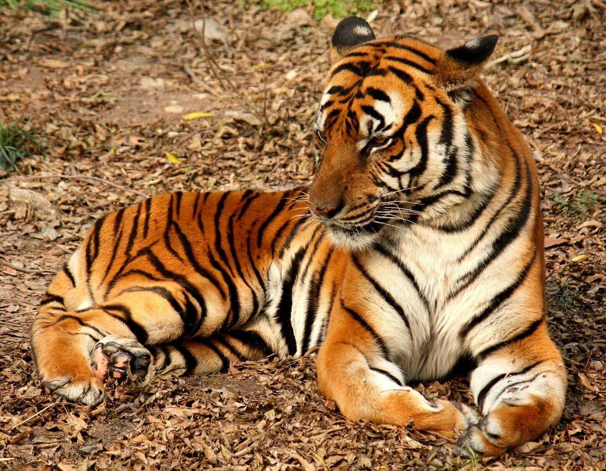

El tigre es un animal que pertenece a la subfamilia de los panterinos, dentro del género Panthera. Dentro de esta misma clasificación, también se engloban otros animales como el león, el jaguar y el leopardo. Su gran porte y su extrema inteligencia hacen del tigre uno de los animales más admirados y temidos en nuestro planeta, además de que poseen habilidades adaptativas sorprendentes que le han permitido sobrevivir desde hace dos millones de años atrás hasta nuestros días.
Es muy fácil distinguir a un tigre por las rayas negras que rodean su cuerpo, lo que junto a un color predominantemente naranja con moteados blancos, le brinda a esta especie un aspecto muy hermoso. Además, los patrones negros (más abundante en los machos) les permiten camuflarse en la hierba cuando se dispone a cazar, y como dato curioso, estos patrones son distintivos de cada tigre, muy similar a las huellas dactilares en los humanos. Cabe destacar que el tigre es el félido más grande de nuestro planeta, con un peso que puede variar entre 100 y 370 kg.
Con respecto a la longitud, los tigres suelen medir en promedio hasta dos metros y medio incluyendo la cola, y desde la cruz, su altura se determina en 120 cm como promedio. Las hembras suelen ser un poco más pequeñas y apenas rebasan los 2.75 metros de longitud.
Dentro de las subespecies, el tigre de Sumatra es la más pequeña con 2.30 metros de longitud, mientras que el tigre de Bengala es el más grande de todos. Por otra parte, los tigres poseen una visión nocturna excelente, se cree que pueden distinguir los colores y además, son excelentes nadadores.
